Лабораторная работа №3
Компьютерная реализация стандарта AES.
Реализовать программные средства шифрования и дешифрования текстовых файлов при помощи стандарта AES
ТЕОРЕТИЧЕСКИЕ СВЕДЕНИЯ
AES – симметричный итеративный блоковый алгоритм;
AES – не шифр Фейстеля, базируется на принципах новой сети подстановок-перестановок.
Имеет новую архитектуру SQUARE (КВАДРАТ), для которой характерно:
- представление шифруемого блока в виде двумерного байтового массива;
- шифрование за один раунд всего блока данных ( байт-ориентированная структура);
- выполнение криптографических преобразований, как над отдельными байтами массива, так и над его строками и столбцами.
AES зашифровывает и расшифровывает 128-битовые блоки данных.
AES позволяет использовать три различных ключа длиной 128,192 или 256 бит (в зависимости от длины ключа версии шифра обозначают AES-128, AES-192 или AES-256).
От размера ключа зависит число раундов шифрования:
- длина 128 бит – 10 раундов;
- длина 192 бита – 12 раундов;
- длина 256 бит – 14 раундов.
- Все раунды, кроме последнего, идентичны.
Основным элементом, которым оперирует алгоритм AES, является байт.
Для формирования байтов 128 битов блока открытого текста, выходного блока шифротекста и ключа шифра делятся на группы из 8-ми рядом стоящих бит так, чтобы в целом получился массив байт.
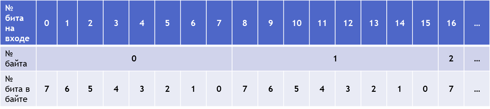
Рисунок 1. Принятая нумерация бит в пределах каждого байта
-
Приедставление данных в криптоалгоритма AES
Задавать значение байта удобно в шестнадцатеричной системе исчисления.
Для этого байт делится на две группы из 4-х бит: группа старших бит в байте представляется первым шестнадцатеричным символом, а группа младших бит – вторым.
Например, для байта 10101100 получим
10101100 = 1010 1100 = АС.
Обозначим:
in0, in1,…, in15 – 16 байт блока открытого текста;
k0, k1,…, k15 – 16 байт ключа шифра;
о ut 0, out1,…, out15 – 16 байт блока шифротекста.
Внутри алгоритма операции выполняются над матрицей байт, называемой матрицей состояний State или просто состоянием.
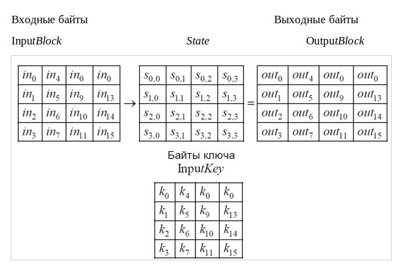
Четыре байта в каждом столбце матрицы состояний или ключа можно рассматривать как одно 32-х битовое слово.
Поэтому матрица состояний – это массив из 4 слов w0,w1, w2,w3, где
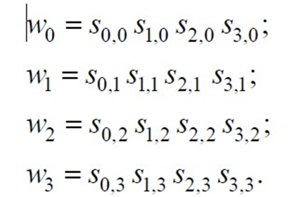
Матрица, поступающая на вход каждого раунда называется матрицей Inpu tState, а на выходе раунда образуется матрица OutputState .
Очевидно, на входе первого раунда InputState=InputBlock, а на выходе последнего раунда OutputState= OutputBlock.
Например, представим в виде матрицы InputBlock текст
СКЛАДНІСТЬЗАДАЧІ = (21 14 15 00 05 17 11 21 22 30 09 00 05 00 27 11)10= (15 0Е 0F 00 05 11 0B 15 16 1E 09 00 05 00 1B 0B )16
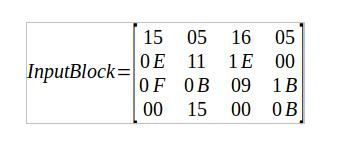
В рассматриваемой версии алгоритма AES-128 ключ шифра состоит из 128 битов, поделенных на 16 байтов k0,k1,...,k15 , и записывается в столбцы матрицы InputKey.
Каждый столбец матрицы InputKey образует слово, т.е. фактически ключ шифра – это четыре слова w0,w1,w2,w3, где w0 = k0k1k2k3, w1 = k4k5k6k7 и т.д.
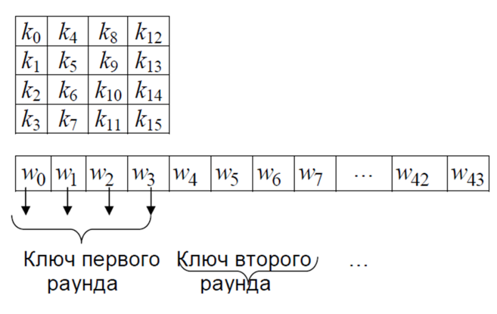
Они играют роль раундового ключа.
Из этих слов с помощью специального алгоритма образуется последовательность из 44 слов: w0,w1,w2,...,w43 (каждое слово по 32 бита).
На каждый раунд шифрования подаются по четыре слова этой последовательности.
-
Схема преобразования данных
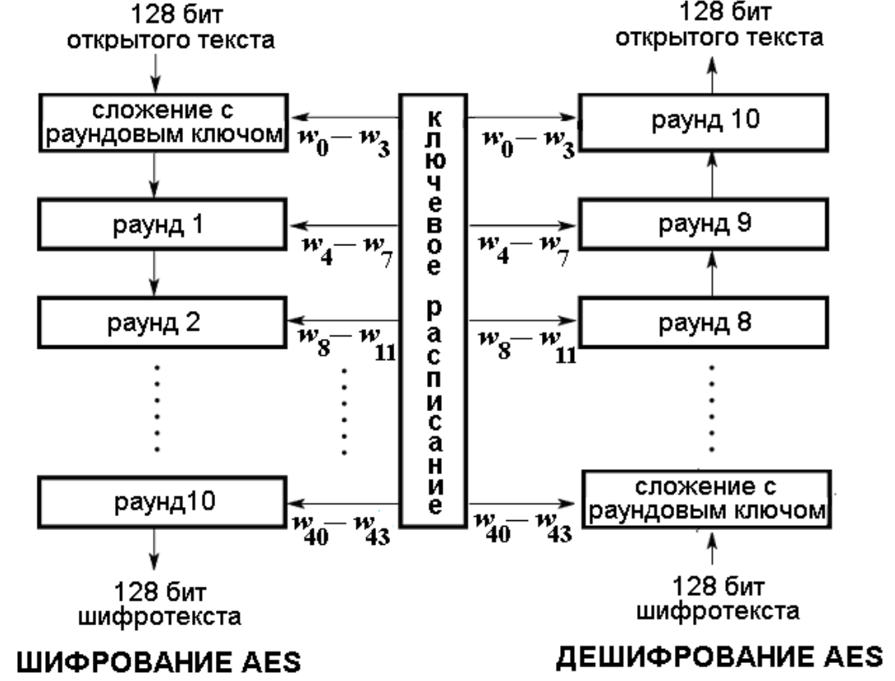
Рисунок 2. Схема преобразования данных
-
Структура раунда AES
Перед первым раундом выполняется операция AddRoundKey (суммирование по модулю 2 с начальным ключом шифра). Преобразования, выполненные в одном раунде, обозначают Round (State, RoundKey),где State – матрица, описывающая данные на входе раунда и на его выходе после шифрования; RoundKey – матрица, содержащая раундовый ключ.
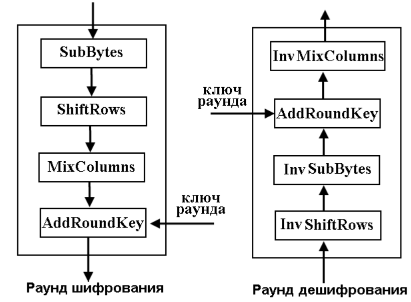
Раунд состоит из 4 различных преобразований:
SubBytes – побайтовая подстановка в S-боксе с фиксированной таблицей замен;
ShiftRows – побайтовый сдвиг строк матрицы State на различное количество байт;
MixColumns – перемешивание байт в столбцах;
AddRoundKey – сложение с раундовым ключом (операция XOR).
Последний раунд несколько отличается от предыдущих тем, что не задействует функцию MixColumns.
-
-
Раундовое преобразование AES
-
Операция SubBytes.
Операция выполняет нелинейную замену байтов, выполняемую независимо с каждым байтом матрицы State.
Замена обратима и построена путем комбинации двух преобразований над входным байтом:
нахождение обратного (инвертированного) элемента относительно умножения в поле GF (23) (считается, что нулевой байт {00} переходит сам в себя);
выполнение некого аффинного преобразования:
умножение инвертированного байта на многочлен
и суммирование с многочленом
в поле F2[x] / x + 1.
Заметим, что и
В матричной форме процедура SubBytes записывается как
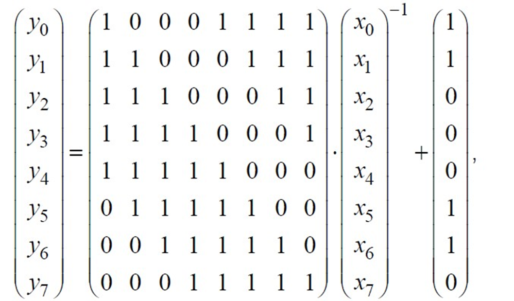
Где x - входные биты, y – выходные.
Если на вход функции попадает нулевой байт, то результатом замены будет число y = b.
Процесс замены байтов с помощью таблицы подстановки иллюстрирует рисунок.
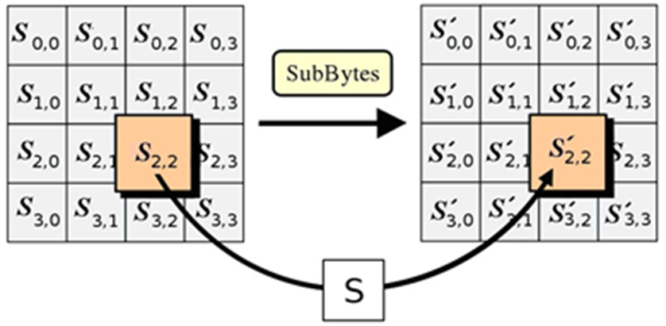
Нелинейность преобразования обусловлена нелинейностью инверсии x-1, а обратимость – обратимостью матрицы.
Созданную на основе этой операции специальную таблицу замен байтов в шестнадцатеричной системе называют S-боксом.
Например, если s1,1 = {8A}, то результат замены этого байта следует искать на пересечении строки с индексом 8 и столбца с индексом A, т.е. SubBytes(8A)={7E}.
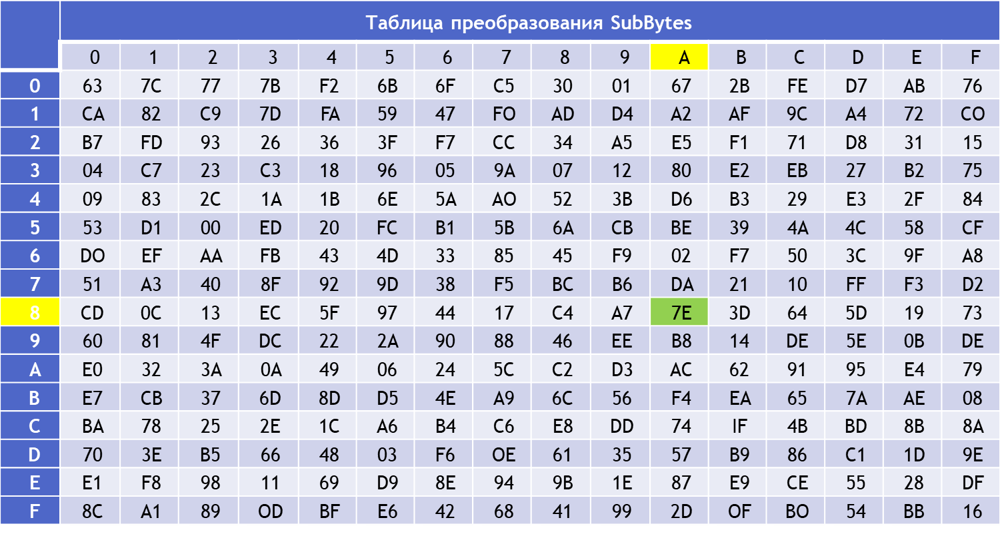
Рисунок 3. Раундовое преобразование SubBytes
-
Операция ShiftRows.
Операция применяется к строкам матрицы State – ее первая строка неподвижна, а элементы нижних трех строк циклически сдвигаются вправо на 1, 2 и 3 байта соответственно.
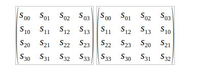
По сути это перестановка элементов матрицы, в которой участвуют только элементы строк, поэтому преобразование обратимо.
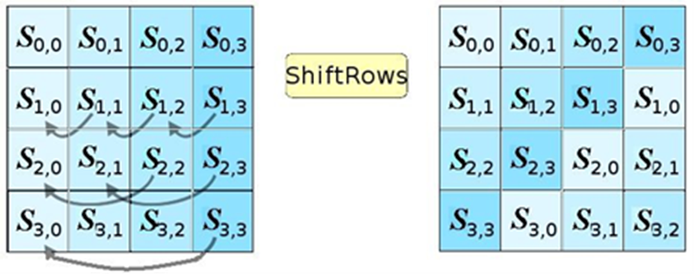
-
Операция MixColumns.
С помощью этой операции выполняется перемешивание байтов в столбцах матрицы State.
Каждый столбец этой матрицы принимается за многочлен над полем GF (23) и умножается на фиксированный многочлен

по модулю многочлена x4 + 1 (напомним, все коэффициенты многочленов над полем GF(28)– байты).
Как показано выше, такую операцию можно записать в матричном виде как
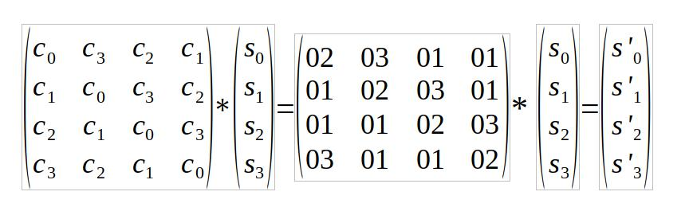
Многочлен c(x) – взаимно простой с многочленом x4 + 1 над полем GF (23) , поэтому в поле существует обратный многочлен c-1(x) (mod x4 + 1) матрица в этой формуле обратима.
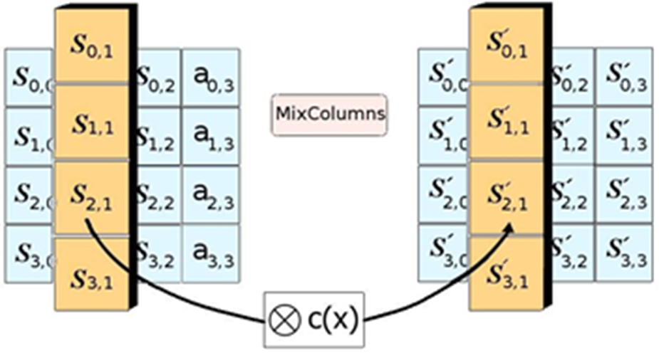
-
Операция AddRoundKey.
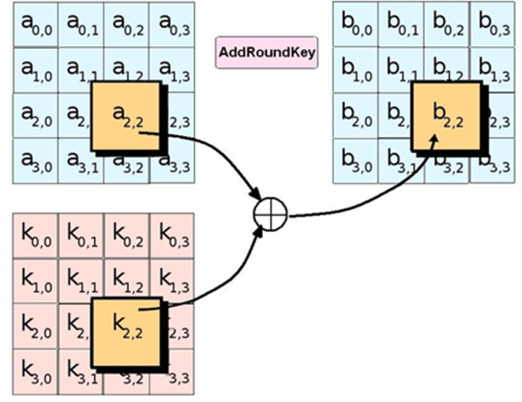 Функция AddRoundKey(State, RoundKey) побитово складывает элементы переменной RoundKey и элементы переменной State по принципу: i-й столбец данных (i=0,1,2,3) складывается с определенным 4-байтовым фрагментом расширенного ключа W [4 r + 1], где r – номер поточного раунда алгоритма.
При шифровании первое сложение ключа раунда происходит до первого выполнения операции SubBytes.
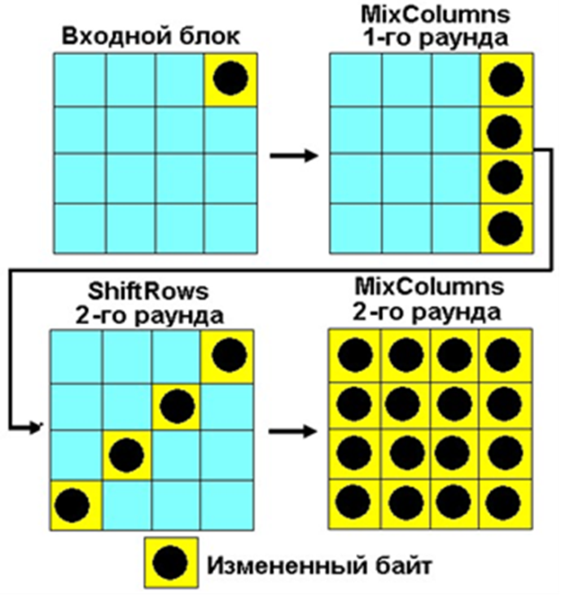
Рисунок демонстрирует свойства рассеивания и перемешивания информации в ходе шифрование алгоритмом AES. Видно, что два раунда обеспечивают полное рассеивание и перемешивание информации. Достигается это за счет использования функций ShiftRows и MixColumns. Операция SubBytes придает шифрованию стойкость против дифференциального криптоанализа, а операция AddRoundKey обеспечивает необходимую секретную случайность.
-
-
Ключевое расписание AES
Раундовые ключи вырабатываются из ключа шифра K с помощью процедуры расширения ключа, в результате чего формируется массив раундовых ключей, из которого затем непосредственно выбирается необходимый раундовый ключ.
Каждый раундовый ключ имеет длину 128 бит (или 4 четырехбайтовых слова wi ,wi + 1,wi + 2,wi + 3, а длина в битах всех раундовых ключей равна:
128 бит*(10 раундов + 1) = 1408 бит (или 44 четырехбайтовых слова w 0,w1,w2,...,w42,w43 ).
Первые четыре слова w0,w1,w2,w3 в ключевом массиве заполнены ключом шифра, из остальных выработанных 40 слов выбираются по 4 слова для ключа раунда.
Выбор слов прост: первые четыре слова (они совпадают с ключом шифра) являются ключом с номером 0, следующие четыре слова w4,w 5,w6,w7 – раундовым ключом для первого полного раунда и т.д.
Новые слова wi + 4,wi + 5,wi + 6,wi + 7 следующего раундового ключа определяются из слов wi,wi + 1, wi + 2,wi + 3 предыдущего ключа на основе уравнений:
Wi + 5 = Wi + 4 ⊕ Wi + 1;
Wi + 6 = Wi + 5 ⊕ Wi + 2;
Wi + 7 = Wi + 6 ⊕ Wi + 3.
Первое слово Wi + 4 в каждом раундовом ключе изменяется подругому:
Wi + 4 = Wi ⊕ g(Wi + 3),
Здесь действие функции g сводится к последовательному выполнению трех шагов, отображающих слово в слово:
- циклический сдвиг четырехбайтового слова влево на один байт (операция RotWord);
- замена каждого байта слова, полученного на шаге 1, в соответствии с таблицей SubBytes, используемой при шифровании (операция SubWord);
- суммирование по mod2 байтов, полученных на шаге 2, с раундовой постоянной Rcon[i] = (RC[i],0,0,0), несекретной и уникальной для каждого раундового ключа Ki .
Три самые правые байты этой константы – нулевые, а ненулевой левый байт меняется по известному закону рекурсии:
RC[1] =1, RC[i] = 2 * RC[i -1], i =1,2,...10 .
Цель суммирования с раундовыми константами – разрушить любую симметрию, что может возникнуть на разных этапах разворачивания ключа и привести к появлению слабых ключей, как в алгоритме DES.
Работа алгоритма расширения ключа продемонстрирована на рис. 4
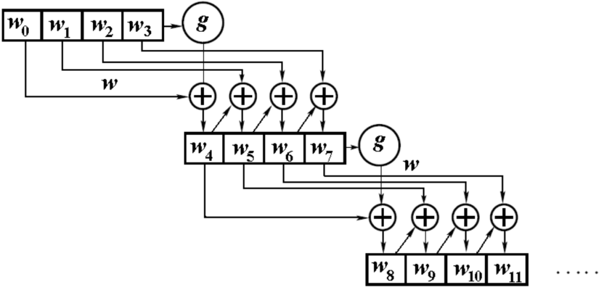
Рисунок 4. Работа алгоритма расширения ключа
-
ПРИМЕР.
Начало зашифрованияКлюч шифра OF 15 71 C9 47 D9 E8 59 0C B7 AD DF AF 7F 67 98
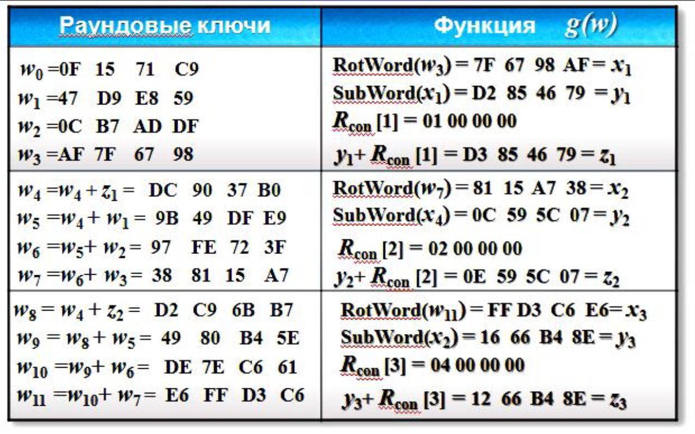
-
Расшифрование AES
Для расшифрования шифротекста все используемые шифрующие преобразования могут быть инвертированы и применены в обратном порядке.
Перед первым раундом дешифрования выполняется операция AddRoundKey, накладывающая на шифротекст четыре последних слова расширенного ключа.
Затем выполняется 10 раундов дешифрования, каждый из которых осуществляет такие операции:
- Операция InvShiftRows, обратная операции ShiftRows. Байты в последних трех строках матрицы State циклически сдвигаются влево на различное число байт. Первая строка неподвижна, а нижние три строки сдвигаются влево на 1, 2 и 3 байта соответственно.
-
Операция InvSubBytes, обратная операции SubBytes. Байты матрицы State заменяются новыми значениями по таблице обратной замены,
являющейся инвертированным S-боксом. (см. табл.)
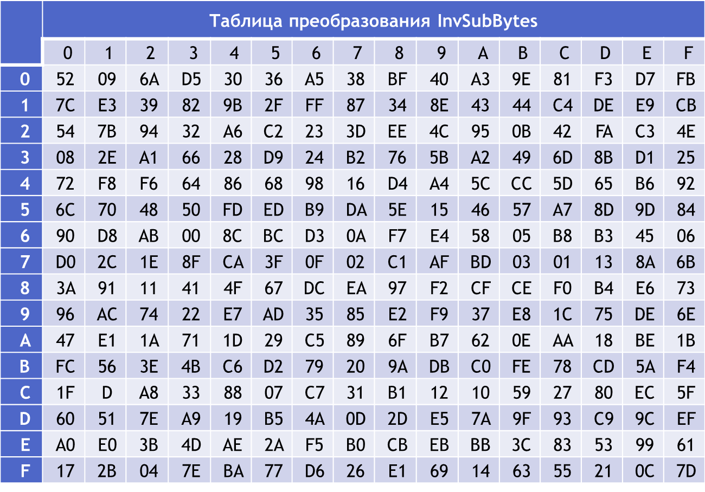
-
Операция InvMixColumns – процедура, обратная процедуре MixColumns.
Каждый столбец матрицы State рассматривается как четырехчленный многочлен над полем GF (23) и умножается на фиксированный многочлен с-1(x) = (0B) x3 + (0D) x2 + (09) x + (0E)
по модулю многочлена x4 + 1.
Такую операцию можно записать в матричном виде

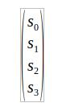 – столбец матрицы State.
-
Операция AddRoundKey является обратной сама к себе, так как состоит только в суммировании по mod 2 .
Последний раунд расшифрования не содержит операцию InvMixColumns.
В алгоритме расшифрования последовательность преобразований отличается от порядка операций шифрования, а алгоритм расширения ключа остается неизменным.
Однако два свойства алгоритма AES позволяют построить другую эквивалентную процедуру расшифрования, где последовательность операций преобразования остается той же самой (естественно с заменой операций на обратные).
Это
- коммутативность операций SubBytes и ShiftRows;
- линейность операций перемешивания в столбце MixColumns и InvMixColumns по отношению к данным столбца, что означает
InvMixColumns(State ⊕ RoundKey)=InvMixColumns(State ) ⊕ InvMixColumns(RoundKey).
Это дает возможность инвертировать порядок выполнения процедур InvSubBytes и InvShiftRows.
Если же дополнительно в последовательности раундовых ключей изменить слова с помощью процедуры InvMixColumns (не трогая первые и последние четыре слова), то порядок выполнения процедур AddRoundKey и InvMixColumns тоже можно изменить на обратный.
ЗАДАНИЕ:
- Изучить теоретические сведения.
-
Создать программы, читающие данные из файла и шифрующие (дешифрующие) их в файл их с помощью с помощью стандарта AES на языке программирования С++.
-
По результатам каждой работы студентом должен быть представлен и
защищен отчет.
Содержание отчета включает:
- Титульный лист
- Постановку задачи и описание использованных алгоритмов.
- Блок – схему алгоритма.
- Распечатку скриншотов результатов ввода данных и исполнения программы.
- Распечатку программного кода.
- Вывод.